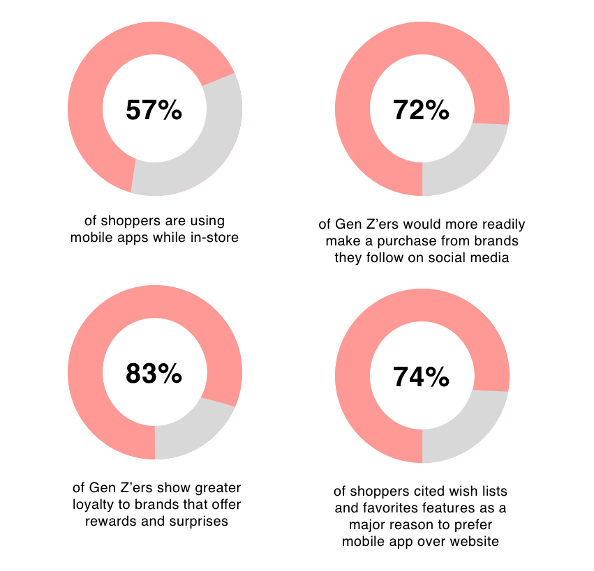

Summer 2019, my team of six ranked 3rd in a Tapestry Case Study Competition, where we
designed a mobile app for the luxury brand, Coach.
Roles: UX/UI Designer
Date: June 24th - July 30th, 2019
Tools: Sketch, Adobe Photoshop
The Challenge
Summer 2019, I was an intern at Kate Spade. Kate Spade, Coach, and Stuart Weitzman are all owned by
Tapestry. Tapestry had a case study competition for all its interns and I was placed in a team of six. My teammates and I, who had either a
design or business background, were tasked with ideating a mobile app for Coach.
Why? Coach.com was seeing a huge jump in the number of mobile visitors, along with a huge increase in conversion rates through mobile.
Many of their rival companies had already developed mobile apps to capitalize on convenience and open a new line of communication between customer
and brand. Coach was also facing difficulties connecting to younger generations and wanted to change that.
As a result, Coach was exploring the introduction of a mobile app for consumers to use at home and potentially in stores to
enhance the Coach shopping experience.
Coach wanted to connect to their customers in an innovative way.
How could we design a mobile app that would appeal to all demographics, especially Gen Z, while maintaining Coach's values
and brand?
User Research
Before working on the actual design, we needed to deepen our understanding of the target demographic: Generation Z.
Luxury brands in general have long been associated with older people due to their high prices. Competitors such as Gucci managed to find ways to connect to
younger people, but Coach had not.
Why did this matter? What was so important about Gen Z?
Our research found that consumers under the age of 30 loved to shop online due to its convenience. Gen Z,
in particular, was estimated to have a spending power of $143 billion. It was no wonder that Coach wanted to tap into
that market, and the best way to do so was through mobile.
Through more research and interviewing younger Tapestry employees, we discovered other key insights on Gen Z:

We concluded that Gen Z valued meaningful incentives and interactions. It wasn't enough to simply have an app. The
experience needed to be engaging.
Apps take up space in users' smartphones. There needed to be a good reason to download them, to use them over
a company's mobile site. Offering tools that mobile sites didn't have, such as wish lists, were one reason. Incentives such as rewards were another (we
suspected this was because Gen Z'ers didn't have a proper income and therefore jumped at any opportunity to save money). Since Gen Z'ers
were more likely to purchase from brands they follow on social media, we also concluded that Gen Z'ers valued building relationships. Lastly,
despite shopping online so frequently, Gen Z'ers still liked to visit stores in person and expected interesting experiences there.
We created a Gen Z persona to tie all these findings together:
Market Research
Gen Z clearly valued new and innovative technology. What sort of technology was out there, and how were they being used?
We researched technological trends and found that Augmented and Virtual Reality were growing rapidly,
with 48% of shoppers saying they were more likely to shop at retailers that utilized them. Gucci, in fact, was using AR to allow customers to
try on sneakers.
The reasoning behind this was because customers may hesitate to buy something online if they're unsure how it would look on them.
We thought this was a great idea that didn't just need to be limited to shoes. Why not let users try on other items as well? We looked into the feasibility of that.
AR required customers to use a camera, which could be tricky for trying on tops or bottoms. However, it was doable with VR, where customers could create an
avatar that would wear the clothes for them.
Since Gen Z also cared for positive in-store experiences, we researched methods for Coach stores to use advanced technology. QR
codes were becoming increasingly popular due to their convenience: all users need to do is scan them with their phone camera. We decided that QR codes could
work with VR. An in-store customer could scan an item they liked and virtually try it on, saving them the time needed to find a fitting room and change.
So VR technology might capture Gen Z'ers initial attention, but trends don't last forever. How do we ensure that Gen Z'ers developed a real love for Coach?
How do we maintain interest?
We dived into the relationship between Gen Z and social media. Many Gen Z'ers said they were more likely to purchase from brands they followed
on social media, and we also found that 97% of Gen Z'ers were using social media, particularly Instagram, as their top source for fashion inspiration. Gen Z'ers wanted to
know what peers were up to, what the latest trends were. Brands were beginning to take advtantage of that by developing online personalities.
By prioritizing organic content, brands would feel more like people, as opposed to companies, creating a more personal connection.
We decided that a social platform where customers can share photos of themselves wearing Coach products would create that desired connection. First,
it would help Gen Z'ers feel that regular people like them could pull of Coach products. Second, it could serve as a reference: if a customer wasn't sure how to style something, they could receive inspiration
from other customers, removing their doubt of purchasing it. Since Gen Z'ers looked up to celebrities a lot, we decided the social platform should also feature Coach's ambassadors,
further pushing the image that Coach was a "cool" brand.
From Teva's instagram. The photos from regular people make the brand feel more accessible.
The other aspect of maintaining customer interest was offering tangible incentives. Coach products were not cheap and since most young
people don't have a stable income, they may be deterred from making regular purchases. We found before that Gen Z'ers were crazy about rewards because they added more
benefits to their purchases, in the form of discounts and other perks. We looked into how competitors set up their rewards system to build customer loyalty. I decided to also
research non-shopping apps that had a rewards system in place and found myself most drawn to Snapchat's.
Snapchat trophies are organized into sets, with the trophies of each set building on one another. In this example, users win the star
trophy by reaching a Snapchat score of 500. The next trophy in the set would be won by reaching an even higher score. I liked this idea because it encouraged users
to do the same few actions Snapchat wanted them to do (in this case, keep sending Snaps). Coach could leverage this idea to encourage users to keeping spending,
keep visiting stores, and more. This would also save Coach from needing to come up with many unique rewards.
Our final research phase focused on general eCommerce best practices for both experience and visuals. We analyzed the mobile apps of several
other brands, such as Chanel, Nike, and Louis Vuitton.
We liked the cleanliness and big images, but Coach's app could definitely be more fun and interesting!
Ideation
Based on our research, we decided to create an app that would:
1. Utilize VR to allow customers to quickly try on products in/out of stores.
2. Build an online community by letting customers share/save photos/products and
featuring social media influencers/Coach ambassadors.
3. Utilize a rewards system to incentivize customers to keep using the app.
Once we formulated an idea, we created a flow chart to help us flesh out the details.
One of my teammates, Morgan Rossi, also drew a few amazing sketches to help think of the app's appearance! We especially loved her idea
of making the space where customers try on clothes look like a fitting room.
Thanks Morgan :)
For further inspiration, we visited the recently opened Coach store in Hudson Yards,
NYC, since that's the store design Coach is pushing forward. There's a large pink room in the store, so
we decided to make pink a motif in the app. The store also has a customization lab that features a
neon sign on a metal fence, so we made that a motif as well.
Lots of cute details in the store but the pink wall and neon sign were definitely my fave!
High Fidelity Wireframes
These wireframes are redesigns of the ones submitted, following
the judges' critiques that the social media platform felt a bit crowded. I was originally responsible for the
home and shop pages and rewards system. These wireframes below are all by me.
The app icon. The goggles are the "C" from Coach. They're a nod to the
VR aspect of the app and symbolize viewing the world through Coach's eyes. The background is a peach color that
Coach commonly uses for their products.
The home page. Since this is the page customers see first, we wanted it to get them
excited about exploring the app. The top section would feature a new, exciting thing happening at Coach. In this wireframe,
customers can watch Coach's collection at NYFW live, only on the app. Below could be new arrivals and the latest posts from
Coach's ambassadors.
Hover to see the old design!
To build the community Gen Z'ers crave, we created a social platform where people can share how they wear
Coach and save posts made by others. Customers can also follow Coach's ambassadors. The posts are listed
in a blog-like layout, as opposed to a standard grid, to make the page more visually interesting. Following the judge's critique,
I rearranged elements to make the page feel less crowded. I also changed the background color to white to add a sense of cleanliness and luxury.
The shop page. We followed the eCommerce standard of organizing the products into
different categories. Again, note the blog layout for the products. Customers also have the
option to save items they like, as that was a feature considered to be very valuable.
The VR fitting room. When customers first set
up an account, they are asked to create an avatar, which they can edit anytime. The avatar can try on
all the products to give customers an idea what they would look like on them.
To make the app usable in stores, we've included a camera where customers
can scan a product's QR code and try them on virtually. This would help users save time
from waiting for an available fitting room and putting on/taking off items. They can also take photos of the product itself
to share or save.
Your profile page is where you can edit your avatar and view your saved posts.
You can also view your rewards. We created a rewards system where customers can win the Coach charms that are used for customization.
Following Snapchat's design, there are different sets of charms, where each charm builds off of each other.
For example, to unlock the Black Tea Rose, customers would need to spend over $100. To unlock the Blue Tea Rose,
customers would need to spend over $500, and to unlock the Purple Tea Rose, a $1000. Each reward would offer a
discount or access to an event or sale. This would incentivize customers to keep using the app.
Feedback & Reflection
Responses from the judges were positive. They found our design to be creative and
innovative. The one critique they had was our original social media platform felt a bit crowded. Corrections to
this were made.
This was my first time designing a mobile app, and for a large company.
I was pushed to think bigger and smaller at the same time: I had to come up with innovative
ideas while keeping in mind that a phone screen is tiny. It was a new experience that
helped me grow greatly. If I were to redo it, I would test the design with users to see how they respond.